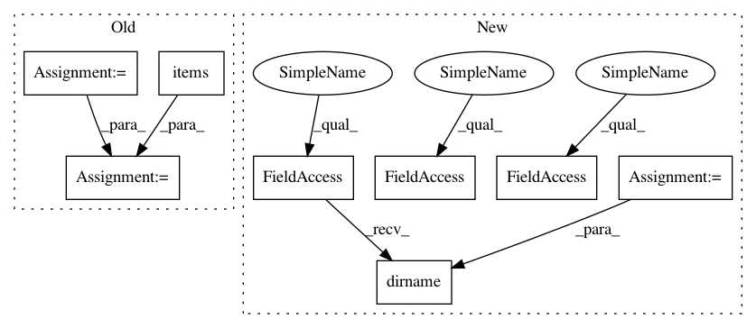

5b8864d1863ac0474db8b657f023341686f4b1fb,benchmark/imdb.py,,imdb_raw,#,9
Before Change
def imdb_raw():
index_offset = 3 // word index offset
(x_train, y_train), (x_test, y_test) = imdb.load_data(index_from=index_offset)
word_to_id = imdb.get_word_index()
word_to_id = {k: (v + index_offset) for k, v in word_to_id.items()}
word_to_id["<PAD>"] = 0
word_to_id["<START>"] = 1
word_to_id["<UNK>"] = 2
id_to_word = {value: key for key, value in word_to_id.items()}
x_train = list(
map(lambda sentence: " ".join(id_to_word[i] for i in sentence), x_train)
)
x_test = list(
After Change
def imdb_raw():
dataset = tf.keras.utils.get_file(
fname="aclImdb.tar.gz",
origin="http://ai.stanford.edu/~amaas/data/sentiment/aclImdb_v1.tar.gz",
extract=True,
)
// set path to dataset
IMDB_DATADIR = os.path.join(os.path.dirname(dataset), "aclImdb")
classes = ["pos", "neg"]
train_data = load_files(os.path.join(IMDB_DATADIR, "train"), shuffle=True, categories=classes)
test_data = load_files(os.path.join(IMDB_DATADIR, "test"), shuffle=False, categories=classes)
encoding = "utf-8"
x_train = np.array(train_data.data)
In pattern: SUPERPATTERN
Frequency: 3
Non-data size: 8
Instances
Project Name: keras-team/autokeras
Commit Name: 5b8864d1863ac0474db8b657f023341686f4b1fb
Time: 2020-09-24
Author: jhfjhfj1@gmail.com
File Name: benchmark/imdb.py
Class Name:
Method Name: imdb_raw
Project Name: CyberReboot/NetworkML
Commit Name: 8a5e99fa839be41367ea9d67c169124f8dec4124
Time: 2020-01-16
Author: josh@vandervecken.com
File Name: networkml/parsers/pcap/reader.py
Class Name:
Method Name: parallel_sessionizer
Project Name: keras-team/autokeras
Commit Name: 5b8864d1863ac0474db8b657f023341686f4b1fb
Time: 2020-09-24
Author: jhfjhfj1@gmail.com
File Name: benchmark/imdb.py
Class Name:
Method Name: imdb_raw